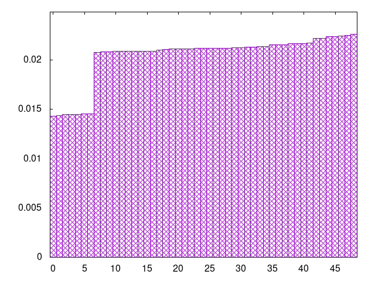
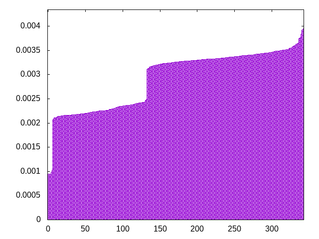
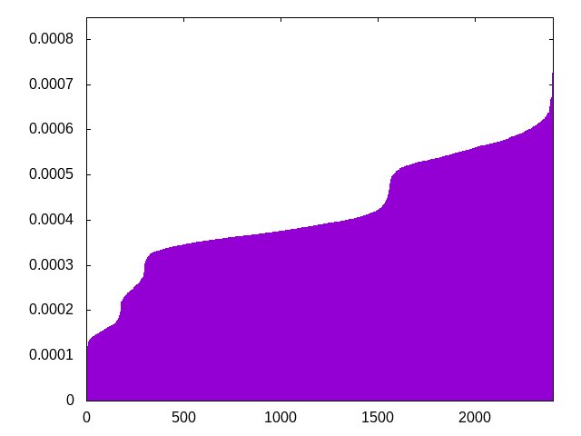
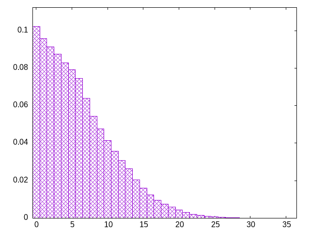

pieces are drawn from a bag (the window) which is refilled by a second bag -- window=10, fixed second bag
tlstizjsloitooltizszsjoljzjtzjlisjiltzjoojoiitzsllstjiszoisiztoisostzlijtslzootjlzjiltzsolztojoiisjzsljzotjittljizillsszltstolsizotjsjlzsjjtjliiozzsloojtollijsotzotljiszstliijzztssozlitoltsijjjtozijiollszjsoisoitsozzzltijsjliztlzitsjlozoojlttsoisiiloztjjoiszlojztstiozljtsiolijjsitlssltjoizzlotslzsoltttiisojjjlsztiotjojzliitsozjztzizsjlszilziotoltojjolijlzslstsojtztjoziltzisliistlszlooosjjjtizslzolsijojjzilszsototjizoiitsjstozltollzlioitjltsoisjztjlzsizsottjllztjissojlzsiojoiszztjjollitzjtsslliziiljosztotzjzollioislotjzjtizslzissitjoojtzjlstozosittoillisolitzljszilsstjjiozzjilozljjztisottolsoszojzlstzjsliioojtltisjitsztjzjjtlszsooiltljzltojtioisiojlistizozsjsllozttlztoijililojjosilsjjztssszzlojtotziztloitiljitsosoijlsstzzsolizjllitjjojztstioizozsliljtozjjtsolszoilzlzioitszljotjjzzlisitljjsitoztsitstolojjliozzlslszjoojtssolitiszjzttsozioijlsttzlzljjziloiotijssllztjjitzisojtlszotistloslilzszijisosjjioztzotoijjozlstojltziltltzislojlsszstoisljtiotoliosjizzolisjzjzlitozjtzitsjlojtlztzsjitlss
bagginess: 0.0180
bagginess6: 0.2686
distribution1_maxgap: 2.000000000002e-06
distribution2_maxgap: 0.0062310062310062305
distribution3_maxgap: 0.0010400020800041601
distribution4_maxgap: 6.9000207000621e-05
diversity: 5.0
entropy: 11.498
evenness_diff: 7.046
evenness_same: 4.493
maxdrought: 35.1
maxflood: 5
peakdrought: 0.0
repchance: 0.1012
seq4_coverage: 1.0000
seq4_follow: 6.643
distribution2_graph:

distribution3_graph:

distribution4_graph:

drought_graph:

similarity: (lower is more similar)
| 0.023 | seamless_bag3_pure |
| 0.045 | bag3 |
| 0.045 | deepbag_window10 |
| 0.053 | bag4 |
| 0.054 | deepbag_window7 |
| 0.054 | balanced_long_add_pure |
| 0.055 | seamless_bag2_pure |
| 0.056 | shift10_5 |
| 0.058 | shift21 |
| 0.074 | balanced9 |
| 0.074 | wet3 |
| 0.077 | balanced_long_mul_pure |
| 0.087 | shift14 |
| 0.100 | shift7 |
| 0.111 | nes_pure |
| 0.123 | bag2 |
| 0.163 | nes |
| 0.215 | wet2_size100 |
| 0.217 | deepbag_fixed7 |
| 0.218 | fullrandom_pure |
| 0.233 | fullrandom |
| 0.247 | weight_lin_pure |
| 0.273 | wet2 |
| 0.274 | weight2 |
| 0.300 | balanced5 |
| 0.329 | deepbag_window4 |
| 0.330 | balanced7 |
| 0.393 | weight |
| 0.455 | seamless_deep_pure |
| 0.462 | wet3_size12 |
| 0.512 | deepbag_fixed4 |
| 0.545 | tgm |
| 0.549 | tgm_pure |
| 0.638 | bag |
| 0.649 | bag_pure |
| 0.673 | shift3_5 |
| 0.769 | tgm_tap |
| 0.789 | tgm_tap_pure |
| 0.866 | ti |
| 0.878 | weight_exp |
| 0.908 | wet_pure |
| 0.969 | weight_exp_pure |
| 1.081 | wet |
| 1.138 | seamless_bag_pure |
| 2.086 | repeat_recent_pure |
| 2.576 | shift1_75 |
| 4.267 | repeat_last_pure |
| 8.631 | flatbag |
| 8.631 | flatbag_pure |